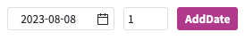

WebSquare의 API를 활용해 yyyyMMdd 형태의 날짜에 입력된 수 만큼 일 수를 더한 날짜를 반환받는 예제입니다.
yyyyMMdd 형식의 날짜에 입력한 수 만큼 더한 날짜 반환받기
STEP 1. yyyyMMdd 형식에 맞는 날짜와 더할 숫자를 입력합니다.
y: Year
M: Month
d: Day
그림 1.브라우저(Chrome) 실행 예시

STEP 2. 버튼을 클릭하면 로그 확인 영역에 결과가 출력됩니다.
그림 2.브라우저(Chrome) 실행 예시
[소스 코드 예시]
// 예제 파일에서는 스크립트 scwin.btn_addDate_onclick에 작성되어 있습니다. var _result = ""; // "yyyyMMdd" 형식의 날짜와 더할 수를 입력받아 더한 날짜를 반환합니다. _result = WebSquare.date.dateAdd("20230809", 3);
WebSquare.date.dateAdd